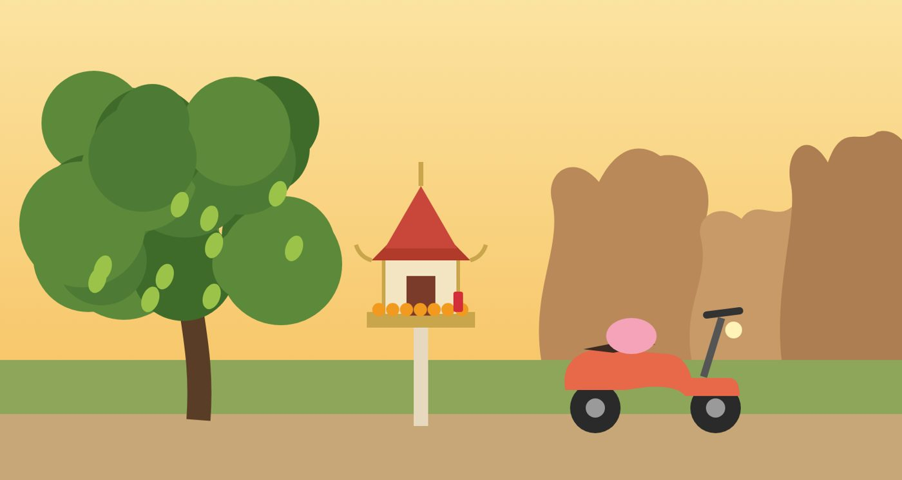

ภาคใต้และวัฒนธรรมไทยThe South and Thai culture
บ้านของมะนาวWhere Lemon comes from
หนังสือเล่มนี้ไม่ได้เล่าเมืองไทยแบบนักท่องเที่ยว มันเล่าจากในบ้าน จากอู่ซ่อมรถ จากไลน์กลุ่มครอบครัว และจากสวนตอนหกโมงเย็น
This book doesn't show Thailand like a postcard. It tells it from inside the house, the workshop, the family LINE group, and the park at six in the evening.

หมายเหตุเรื่องภูมิภาค
A note on the region
กระบี่อยู่บนชายฝั่งทะเลอันดามันของภาคใต้ ภูเขาหินปูน ป่าชายเลน และเกาะนับร้อย คนกระบี่มีทั้งชาวพุทธ ชาวมุสลิม และคนไทยเชื้อสายจีน อยู่ด้วยกันมาหลายร้อยปี ชุมชนมุสลิมส่วนใหญ่อยู่ในเมืองกระบี่และรอบๆ เมือง ส่วนร้านค้าที่อ่าวนางหลายร้านเป็นของคนจากอินเดียและประเทศอื่นKrabi is on the Andaman coast of the South: limestone mountains, mangroves and over a hundred islands. Buddhists, Muslims and Thai-Chinese have lived here together for centuries. Most of the Muslim community lives in and around Krabi Town, while many shops in Ao Nang are run by people from India and other countries.
ตัวเลขศาสนามาจากสำมะโนประชากรปี 2000Religion figures: Thai census 2000, via Wikipedia.
เทศกาล
Festivals

ลอยกระทง
Loy Krathong · บทที่ 21 · Ch 21
คืนวันเพ็ญเดือนสิบสอง คนทั้งเมืองกระบี่ลงไปที่แม่น้ำ มะนาว แม่ ป้าเพ็ญ ฟ้า และดา ไปด้วยกัน ดาไม่ลอยกระทง แต่ไม่เคยพลาดโรตี มะนาวกับคาร์ลอสลอยกระทงหนึ่งใบให้แม่ของเขาOn the night of the full moon of the twelfth month, the whole of Krabi Town goes down to the river. Lemon, her mother, Auntie Pen, Fah and Da go together. Da doesn't float a krathong, but she never misses the roti. Lemon and Carlos float one krathong together for his mother.
- กระทงทำจากหยวกกล้วย ใบตอง ดอกไม้ เทียนหนึ่งเล่ม และธูปสามดอกA krathong is made from a slice of banana trunk, banana leaves, flowers, one candle and three incense sticks.
- เป็นการขอบคุณและขอขมาแม่น้ำ และปล่อยสิ่งไม่ดีของปีนี้ไปIt thanks the river, says sorry to it, and lets go of the bad things from this year.
- บางคนใส่เหรียญ เส้นผม หรือเล็บลงไปด้วยSome people add a coin, a hair or a fingernail clipping.
- มักตรงกับเดือนพฤศจิกายนIt usually falls in November.
อธิษฐานสิ ภาษาอังกฤษหรือภาษาไทย ทั้งสองภาษา
สงกรานต์
Songkran · Thai New Year
ทุกเดือนเมษายน ที่ไทยทาวน์ในแอลเอก็มีงานสงกรานต์ ขบวนแห่ อาหารไทย และน้ำ คนไทยไกลบ้านหมื่นกิโลยังรดน้ำดำหัวกันอยู่Every April, Thai Town in L.A. has Songkran too: a parade, Thai food and water. Thai people ten thousand kilometres from home still pour water for their elders.
สุขสันต์วันสงกรานต์
ทำบุญที่วัด
Making merit at the temple
ตอนกลับบ้าน มะนาวไปวัดแก้วกับแม่ตอนหกโมงเช้า ทำบุญให้แม่ของคาร์ลอส แม่ไม่ถาม แต่แม่รู้Back home, Lemon goes to Wat Kaew with her mother at six in the morning and makes merit for Carlos's mother. Her mother doesn't ask, but she knows.
ทำบุญให้แม่ของเพื่อน
คำไทยที่แปลไม่ได้
Thai words English doesn't have
ในหนังสือ คาร์ลอสบอกว่าภาษาอังกฤษเป็นภาษาของ ตัวฉัน ส่วนภาษาไทยเป็นภาษาของ ช่องว่างระหว่างคน คำพวกนี้อยู่ในช่องว่างนั้นIn the book, Carlos says English is a language about "me", and Thai is a language about the space between people. These words live in that space.
เกรงใจ
Greng jai
ไม่อยากเป็นภาระ ไม่อยากทำให้ใครลำบากใจ มะนาวเกรงใจทุกคน จนลืมถามตัวเองว่าอยากได้อะไรNot wanting to be a burden or make anyone uncomfortable. Lemon is greng jai with everyone, until she forgets to ask herself what she wants.
ไม่อยากรบกวนค่ะ
บุญคุณ
Bun khun · a debt of gratitude
หนี้ที่ใช้คืนด้วยเงินไม่ได้ โรเบิร์ตจ่ายหนี้ห้าหมื่นให้พ่อ และมะนาวก็พูดคำว่าไม่ไม่ได้อีกเลยA debt money can't repay. Robert paid Father's 50,000-baht debt, and Lemon could never say no again.
จะไม่ลืมสิ่งที่คุณทำให้ครอบครัวเรา
ลอตเตอรี่วันที่ 1 และ 16
The lottery, twice a month
พ่อส่งรูปลอตเตอรี่ในไลน์กลุ่มครอบครัวทุกงวด พร้อมคำว่า ลุ้น แปดสิบบาท แลกกับสองอาทิตย์ของความหวังFather posts his lottery ticket in the family LINE group every draw, with the word "ลุ้น". Eighty baht for two weeks of hope.
ลุ้น
ไลน์กลุ่มครอบครัว
The family LINE group
แม่ส่งสติกเกอร์ดอกกุหลาบ สวัสดีวันจันทร์ ทุกเช้า หนองส่งแมวหัวเราะกลับไปMother sends a rose sticker saying "Happy Monday" every morning. Nong sends back a laughing cat.
สวัสดีวันจันทร์
ศาลพระภูมิกับน้ำแดง
Spirit houses and red soda
ที่ไทยทาวน์ในแอลเอ มะนาวเจอศาลที่มีน้ำแดงวางไว้ เหมือนที่กระบี่ มีคนไกลบ้านหมื่นกิโลยังจำได้ว่าผีชอบน้ำแดงIn Thai Town, L.A., Lemon finds a spirit house with red soda, just like in Krabi. Someone ten thousand kilometres from home still remembers the spirits like red soda.
มีคนจำได้ว่าผีชอบน้ำแดง
กลิ่นและรสของภาคใต้
The smells and tastes of the South
ในหนังสือ มะนาวได้ยินข้าวกะเพราก่อนได้กลิ่น เสียงตะหลิว เสียงพริกลงน้ำมันร้อน แล้วกลิ่นใบกะเพราก็ฉุนขึ้นจมูกจนคนรอคิวไอกันทั้งแถวIn the book, Lemon hears pad kaprao before she smells it: the spatula, the chilies hitting hot oil. Then the holy basil hits so hard the whole queue starts coughing.


ข้าวกะเพรา
Pad kaprao
จานละสี่สิบบาทจากรถเข็นปากซอย อาหารที่คนไทยกินบ่อยที่สุด และฝรั่งจามบ่อยที่สุดForty baht a plate from the cart at the end of the soi. The food Thai people eat most, and foreigners sneeze at most.
กลิ่นฉุนและเผ็ด
แกงส้ม
Gaeng som · sour curry
แม่ทำแกงส้มปลาคืนที่ครอบครัวรวมเงินส่งมะนาวไปอเมริกาMother made fish sour curry the night the family pooled their money to send Lemon to America.
รสเปรี้ยวและเผ็ด
ทุเรียน
Durian
วันที่มะนาวกลับบ้าน แม่ซื้อทุเรียนลูกสุดท้ายของฤดูไว้รอ หนามแหลมกดฝ่ามือ บอกเธอว่าถึงบ้านแล้วThe day Lemon comes home, Mother has bought the last durian of the season. The spikes press into her palms and tell her she's home.
หนามแหลมทิ่มมือ
โรตี
Roti
แป้งทอดกรอบ ราดนมข้นกับน้ำตาล ร้านโรตีมุสลิมมีทุกตลาดในกระบี่ และเป็นของโปรดของดาCrispy fried dough with condensed milk and sugar. Muslim roti stalls are in every Krabi market, and they are Da's favourite.
โรตีกล้วยหนึ่งที่ค่ะ
ทะเล เรือ และแม่ย่านาง
The sea, the boats and Mae Ya Nang


เรือหางยาวที่กระบี่จมน้ำลึกเพราะบรรทุกหนัก หัวเรือผูกผ้าสามสีกับพวงมาลัยดาวเรือง ถวายแม่ย่านาง ผู้คุ้มครองเรือ เสียงเครื่องยนต์ของมันคือเสียงวัยเด็กของมะนาว ดังสนั่น แล้วค่อยๆ เงียบ เหลือแค่เสียงน้ำตีลำเรือKrabi's longtails sit low in the water because they carry so much. Their bows are tied with three-coloured cloth and marigold garlands for Mae Ya Nang, the guardian of boats. Their engines are the sound of Lemon's childhood: a roar, then quiet, then only water slapping the hull.
เครื่องยนต์ดังสนั่น แล้วไอ แล้วก็ดับ